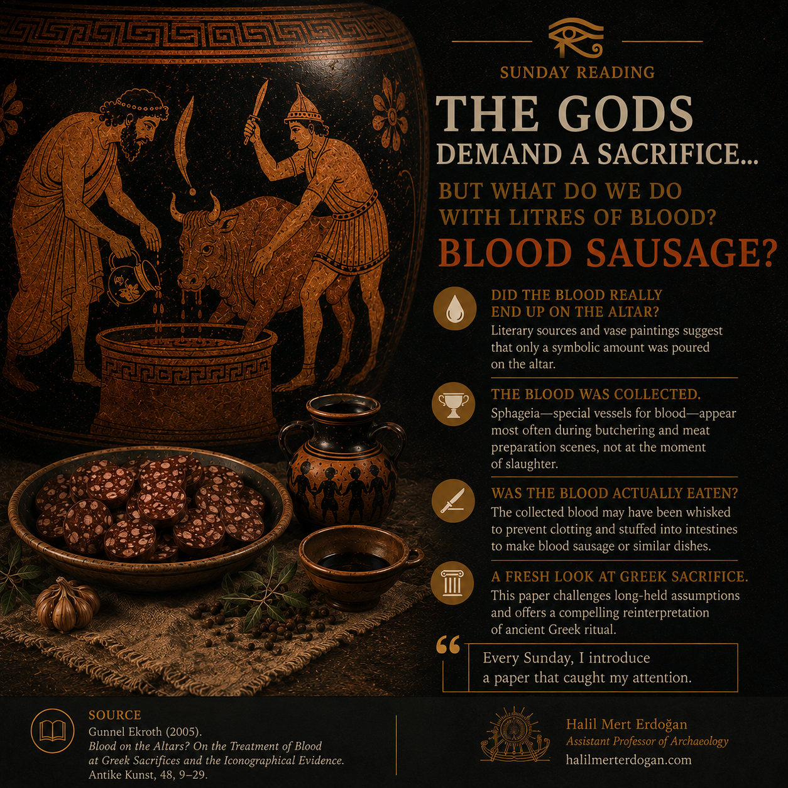

Sunday Reading • SR-002
The Gods Demand a Sacrifice...
What really happened to the blood of sacrificial animals in Ancient Greece? Gunnel Ekroth's study challenges one of the most familiar assumptions about Greek ritual.
Read article →Readings
A weekly collection of archaeological, historical and interdisciplinary readings that inform, challenge and inspire my research.

Sunday Reading • SR-002
What really happened to the blood of sacrificial animals in Ancient Greece? Gunnel Ekroth's study challenges one of the most familiar assumptions about Greek ritual.
Read article →
Sunday Reading · SR-001
Ancient board games were not merely forms of recreation, but cultural media through which ancient societies expressed beliefs, cosmological concepts and perceptions of the universe.
Read article →